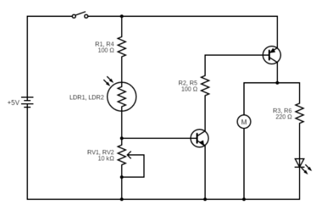

Project
MicroBug
A light-sensitive robot built and soldered to have two light-dependent resistors steer a pair of motors such that the bug scurries toward or away from light.
Jan 2024 - Jun 2024
Overview
MicroBug is a small autonomous robot assembled entirely from discrete components on a single PCB. Two light-dependent resistors (LDRs) act as the bug's "eyes," each feeding a transistor pair that drives one of two motors. When one eye sees more light than the other, that side's motor runs faster, turning the bug so it "chases" or "flees" from the brightest point in the room. LEDs mounted on bent legs give it antennae that glow as it moves.
The whole behavior emerges from analog circuitry alone: transistors used as switches and amplifiers, LDRs as light sensors, and trimmer potentiometers to tune each eye's sensitivity. Building it meant reading a schematic, placing and orienting every component correctly, and through-hole soldering the complete board by hand.
Skills & Tools
Used
Learned
Circuit Schematic
The circuit is mirrored for each side of the bug: an LDR and trimmer potentiometer set a reference voltage, a transistor pair switches the motor, and an LED indicates activity.

Gallery
Use the arrows to step through photos of the finished build.